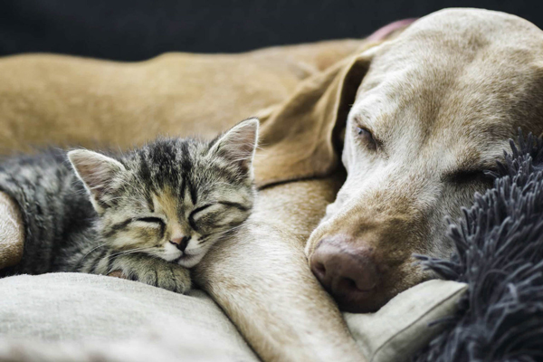

Welcome to the Second Chance Pet Adoption Center. We help dogs and cats find loving homes. Browse available pets below and visit the adoption page to learn how to bring a pet home.
| Name | Type | Age |
|---|---|---|
| Buddy | Dog | 2 years |
| Luna | Cat | 1 year |
| Max | Dog | 4 months |

To learn how to adopt, visit the Adoption Steps page or Apply to Adopt.
Quick links: Adoption Steps | Apply to Adopt | Home